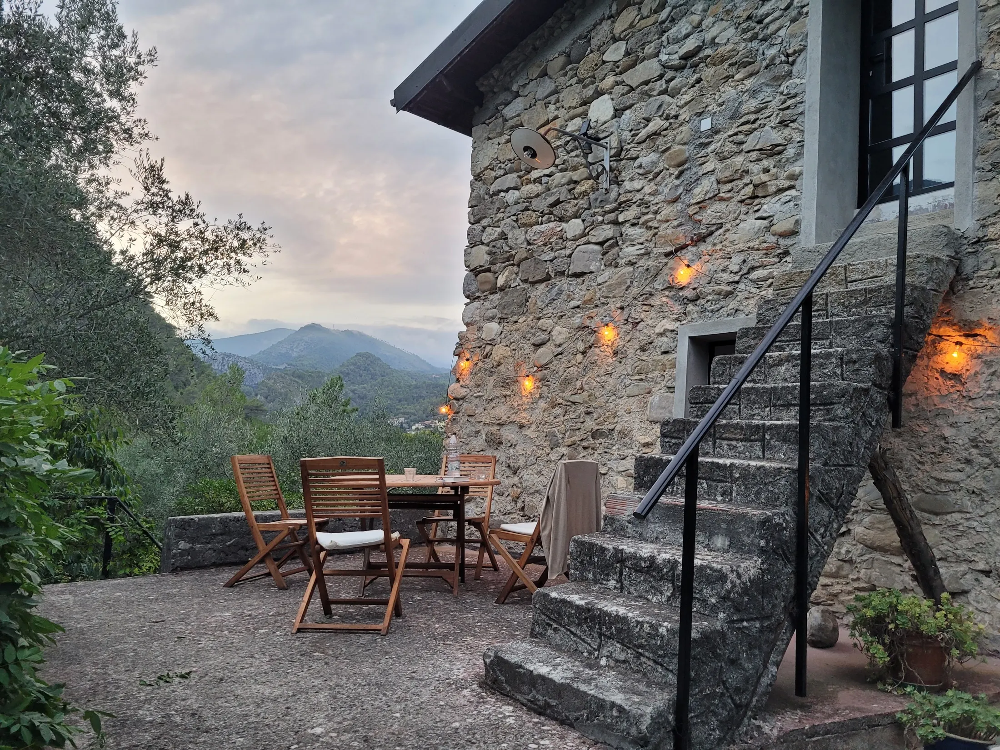

Casa dei Cigni
Casa dei Cigni heeft een woonkamer met houtkachel, een keuken, drie slaapkamers en twee badkamers. Het huis is eenvoudig en sfeervol ingericht, met alle benodigde voorzieningen.
In Italië, net over de grens met Frankrijk
In de nabijheid van de Middellandse Zee, op ca. 15 km, ligt ons mooie vrijstaande huis Casa dei Cigni te midden van de olijfbomen en de uitlopers van de Alpi Marittime.
Casa dei Cigni
In Italië, net over de grens met Frankrijk en in de nabijheid van de Middellandse Zee, ligt Casa dei Cigni te midden van de olijfbomen en de uitlopers van de Alpi Marittime.

Twee plekken, elk met een eigen karakter. Casa dei Cigni is het ruime natuurstenen huis; La Casetta is het vrij gelegen appartement vlakbij.
Casa dei Cigni heeft een woonkamer met houtkachel, een keuken, drie slaapkamers en twee badkamers. Het huis is eenvoudig en sfeervol ingericht, met alle benodigde voorzieningen.

Vlakbij het huis ligt La Casetta, ons vrij gelegen appartement met een overdekt terras en eigen parkeerplaats.
De tuin
Rondom het huis ligt een grote tuin, met diverse terrassen en plekken om te zonnen of juist in de schaduw tot rust te komen. Aan de achterkant van het huis is een overdekt terras waar het heerlijk koel blijft in de zomer.
Een korte selectie uit de beschikbare foto's. Op de detailpagina's staan de volledige fotogalerijen met lightbox.